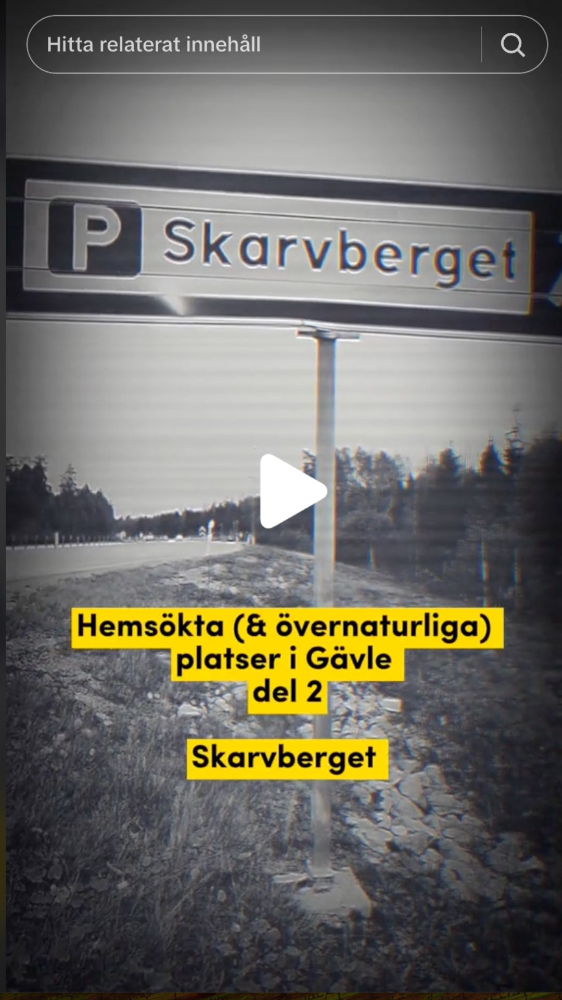
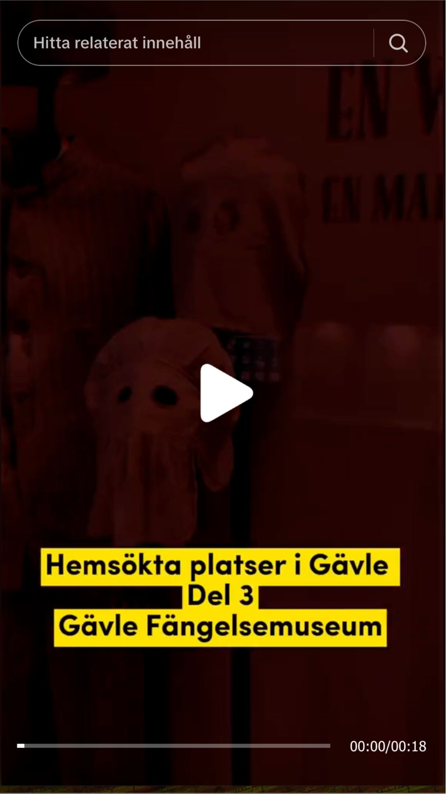

Scandinavian Taste Experience
Den här filmen gjorde jag för SITEs sociala medier. SITE är huvudprojektet i Skaninavisk Måltidsupplevlse som du kan läsa mer om under fliken webbsidor. Syftet med filmen var dels visa upp våra producenter och uppmärksamma en lansering av en transportlösning som gjordes under sommaren 2024.
Medborgardialog, hundrastgårdar i Sandviken
Under våren 2024 hade jag en projektanställning som kommunikatör på Sandvikens kommun. Jag jobbade blandannat med en medborgardialog om hundrastgårdar i Sandviken.
Idén till filmen föddes från de fysiska affisherna (som jag inte hade gjort), som bestod av samma
text och en hund i nedre kant som tittade upp. Av en slump såg den ut som min hund Kladden,
därför ville jag prova att göra den fysiska affishen "levande" i en Instagramreel. I reelen
lades det till en knapp som ledde till en enkät. Det var en bra övning i att vara "good enough" då det var väldigt utmanande att få bort all bakgrund i filmen.
TikTok Alborgen

TikTok kanalen Gävle Highlights var ett projekt som jag var med i under projektledningskurserna.
Den här serien med hemsökta platser i Gävle var ett försök att få upp
visningarna och öka interaktionen på kanalen. Det passade ocskå bra då det var nära halloween vid tidpunkten. Jag filmade denna unde dagtid, men hade tänkt att åka tillbaka när det blev
skymning/mörkt. Jag kom fram till den ensliga vägen paralellt med riksväg 80, såg det gamla
huset och vågade helt plötsligt inte åka hela vägen fram. Lösningen fck bli en massa filter.
Vi var fyra stycken i gruppen och alla gjorde egna
filmer.Dessa filmer är de jag är mest stolt över och framförallt var de var väldigt roliga att
göra, även om det bitvis var läskigt på riktigt.
TikTok Skarvberget

Taggad efter den första filmens framgång gjorde jag denna film. Inte helt lätt att få till en
mystisk känsla på E4an mitt på ljusa dagen. Därför fick även denna film en hel del filter. När jag filmat klart och skulle åka hem hade det
just skett en bilolycka i motsatt färdriktning...
TikTok Fängelsemuseet

Den sista delen i serien var nog den som lämnade mest spår: Gävle Fängelsemuseum. Jag fick en
egen guidad tur i den gamla delen av fängelset. Först tänkte guiden och den medföljande
praktikanten lämna mig ensam där och filma, men det vågade jag inte. Det var som att de gamla fångarnas stjälar kändes i väggarna, vilket också förstärktes av guidens berättelser.I den här filmen lade jag
till text till voiceovern, vilket jag nog borde gjort i de andra filmerna med. Eftersom jag redan börjat med filter i de två första filmerna fick de hänga på här med. Jag fick också erfara hur viktigt det är med rätt musik på Tik Tok då jag först hade lagt på en annan låt som jag tyckte var genial.Det tyckte dock inte TikToks algoritmer, så jag fick byta ut den för att få fler visningar.